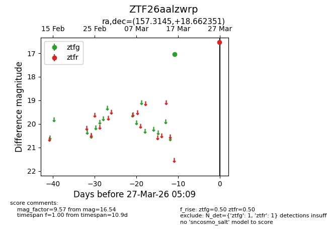
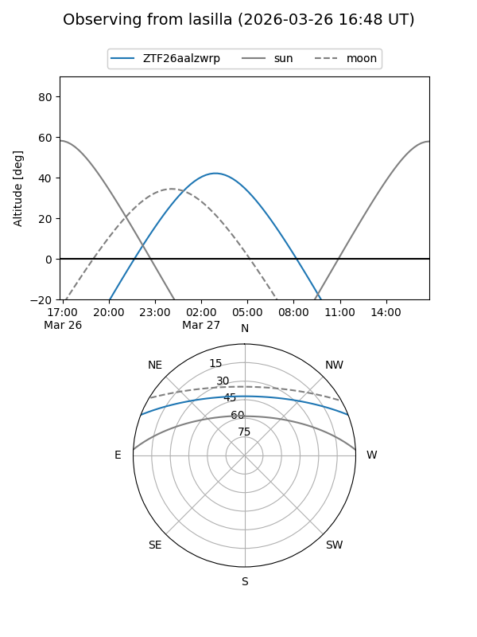
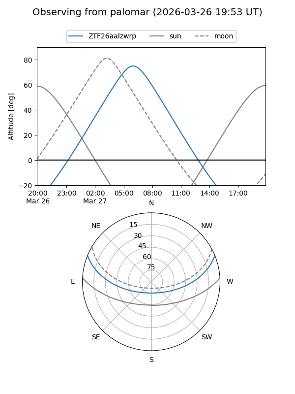

ZTF26aalzwrp
Target ZTF26aalzwrp at 2026-03-27 05:12
Aliases and brokers:
FINK: link
Lasair: link
ALeRCE: link
alt names
ZTF26aalzwrp (ztf,fink_ztf)
Coordinates:
equatorial (ra, dec) = 157.3145,+18.66235
equatorial (HMS+DMS) = 10:29:15.47,+18:39:44.46
galactic (l, b) = (219.8390,+56.30290)
Flags:
Photometry:
last ztfg=17.05, ztfr=16.54
1 ztfg, 1 ztfr detections
Lightcurve

Visibility


Additional plots